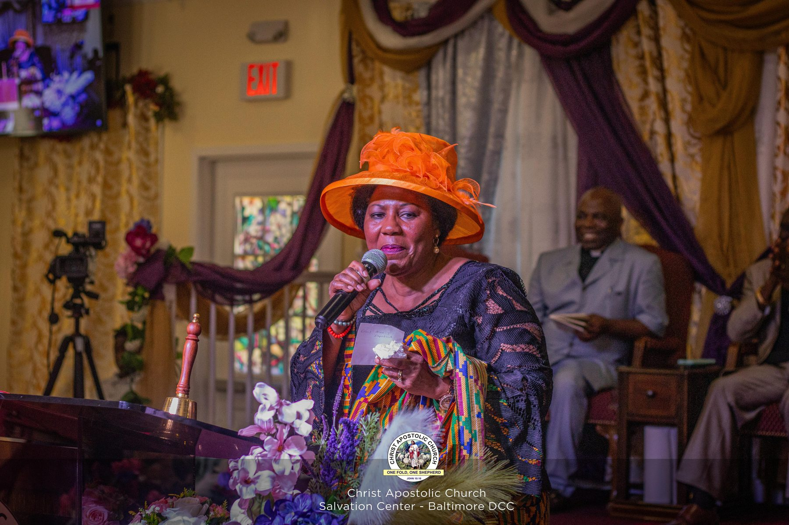
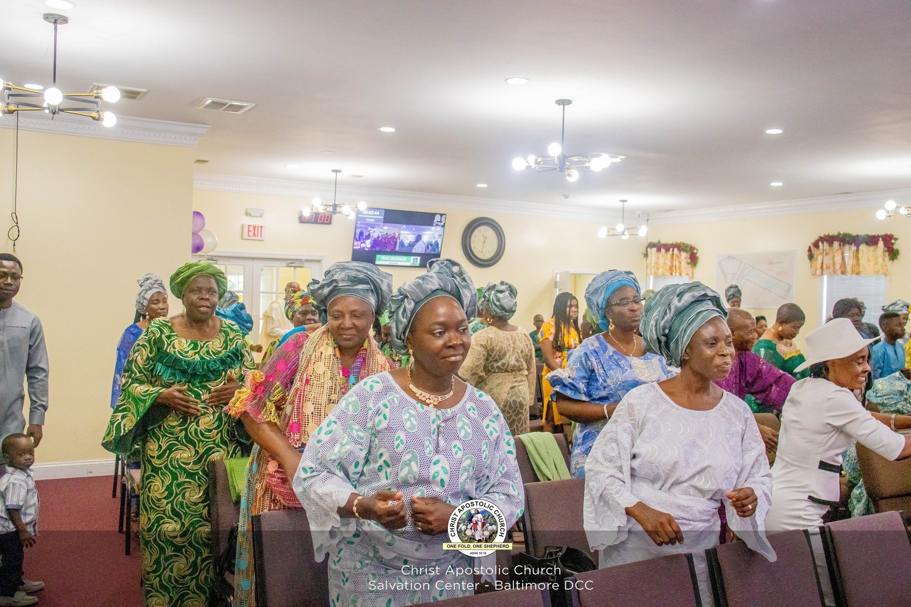
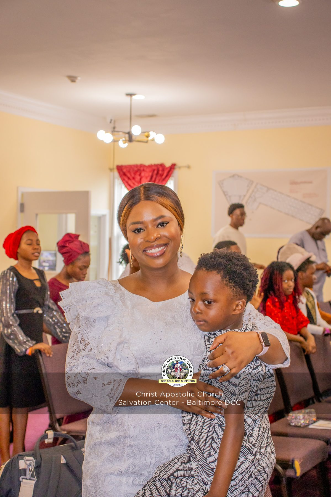
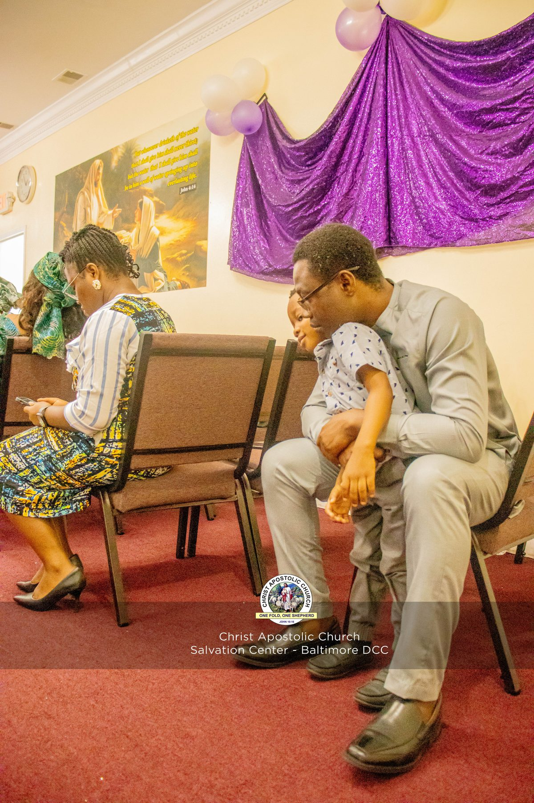
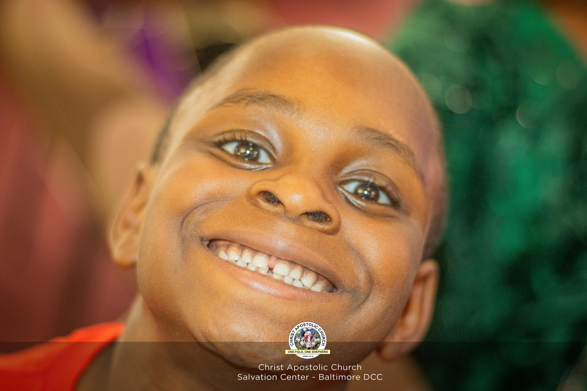
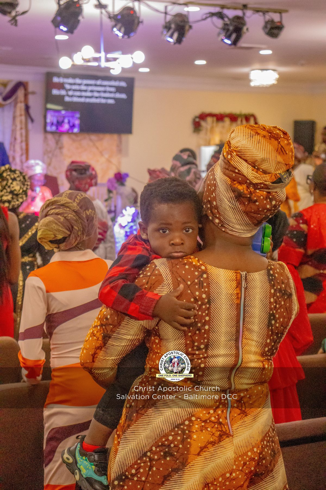

HoWz Studios · Visual
Photography
Real rooms, real light, real people — portraits, ceremonies, and events shot to be lived with, not just looked at once.
01
Selected Frames
18 frames
WorshipLifted

PortraitSunday Best

CeremonyRobes & Rhythm
PortraitGolden Hour

CandidHeld
WorshipIn One Accord
MilestoneEarned Stripes
PortraitQuiet Confidence
CeremonyThe Choir, in Pink

CandidBetween Sets
PortraitReady
CeremonyThe Processional
PortraitGrace, in White

PortraitUnposed
MilestoneClass Portrait
PortraitPresented

CeremonyRobed in Black & White
CandidMid-Step
Available For
Weddings, Ceremonies, Portraits & Events
If it's a room worth remembering, it's worth shooting properly. Send the date and the occasion.
Book Photography